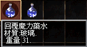
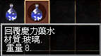

2002年5月21日
新舊版藍色藥水（回覆魔力藥水）

香港伺服器在更新後，部分首領開始會掉下藍色藥水，本網發覺新版（來自首領）和舊版（來自節日活動）的藍水是不會疊在一起的，在鑑定後發現它們的重量是不同的，舊的重31，而新的則重8。在詢問GM後，得知舊版是會比新版回覆更多MP。更正：但經過本網的測試後，原來新藍水是不會加MP的，使用後只會在10分鐘內加快回復MP的數量，15精神的法師由每下回2MP變為每下回7MP。
Copyright(C)1998-2003 Gabriel Leung. All Rights Reserved.